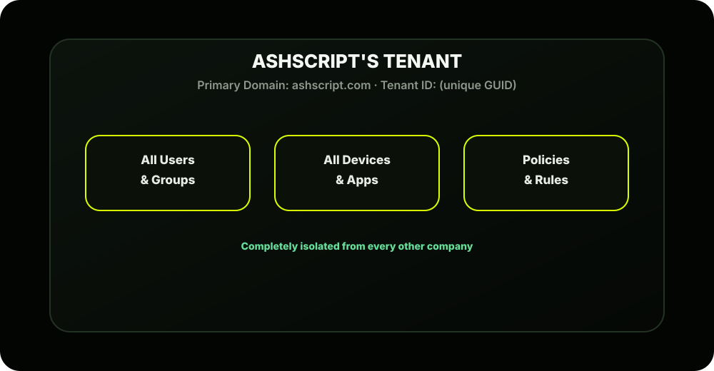
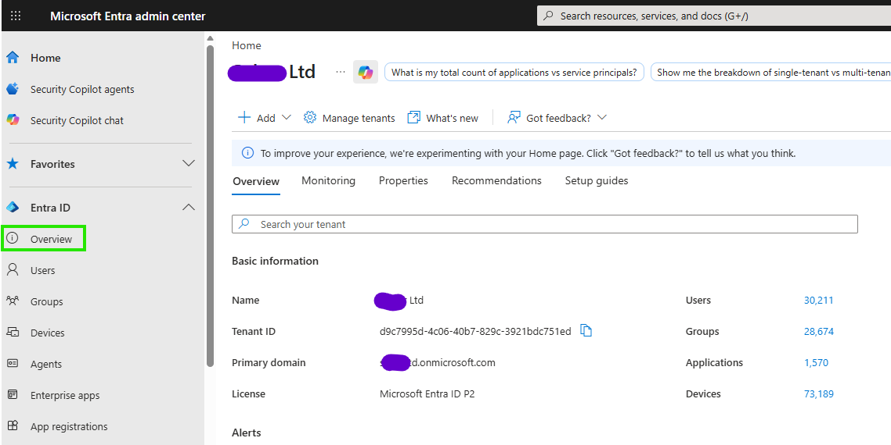
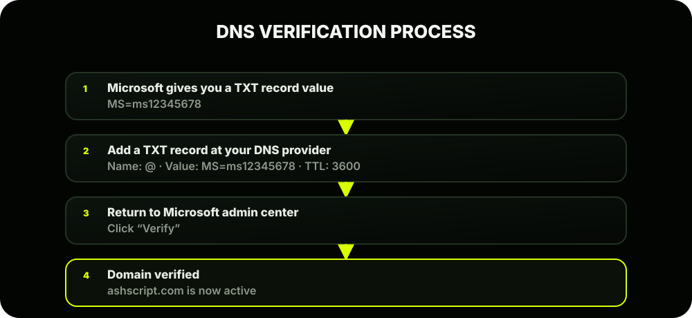
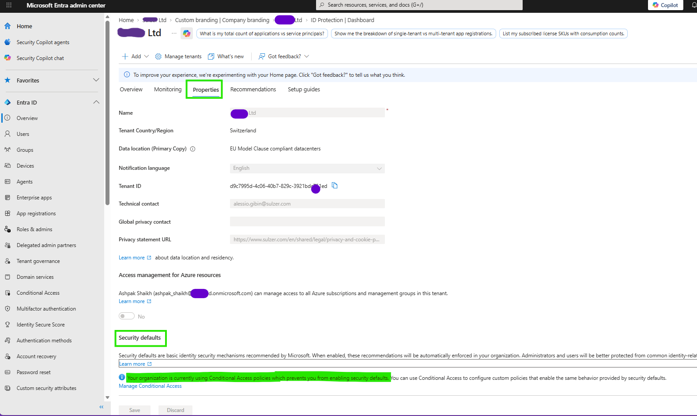
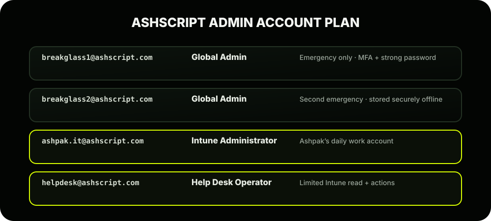
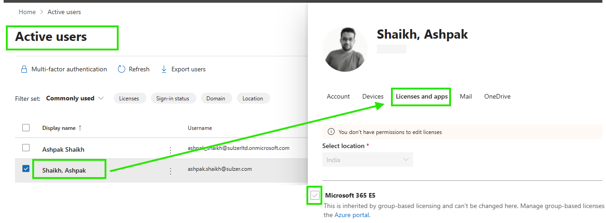
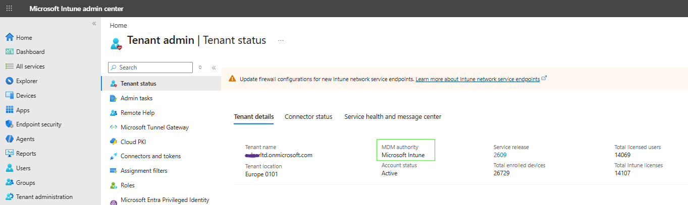
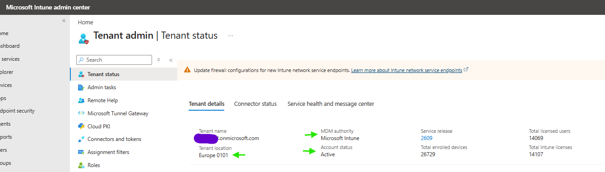
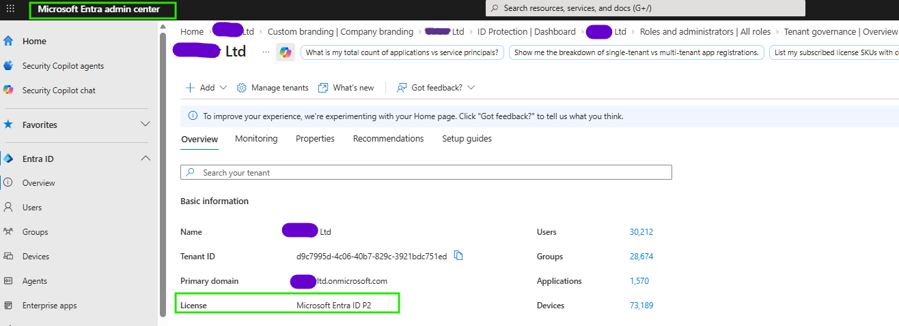
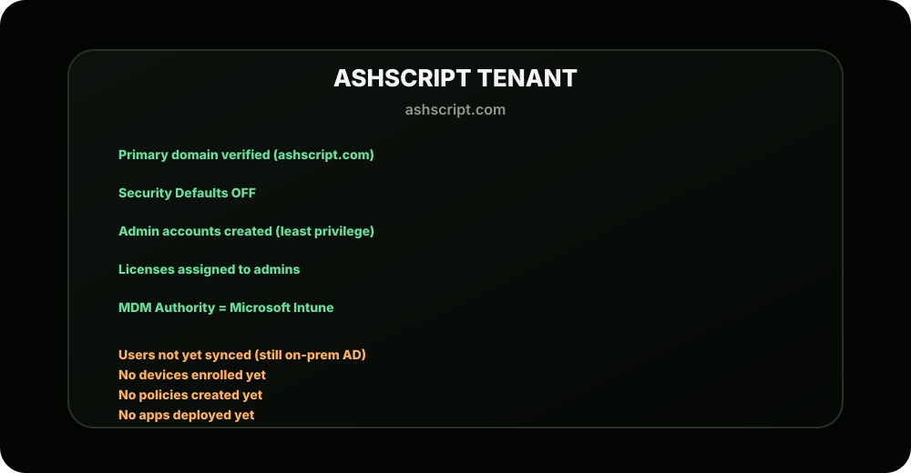

The Scene
Riya walks out of the CFO's office with a thumbs up. The budget is approved for Microsoft 365 E3 for all 1,000 AshScript employees. She drops a message to Ashpak on Teams:
Ashpak nods. He knows Riya is right. The tenant is not just a login; it's the entire identity and security foundation of AshScript's cloud environment. Get it wrong here and everything downstream suffers. So let's do it right.
What Exactly is a Tenant?
Before touching the portal, you need to deeply understand what a tenant is; because this word will come up hundreds of times in your Intune career.
Every tenant has:

Three Things That Define Your Tenant
1⃣ Tenant ID
A unique identifier that looks like this:
This is how Microsoft's systems uniquely identify AshScript in the cloud. You'll need this ID when setting up connectors, third-party integrations, and troubleshooting.
2⃣ Primary Domain
When AshScript signs up, Microsoft assigns a default domain:
This is your fallback domain; it's permanent and can never be deleted. But Ashpak will add the real company domain (ashscript.com) on top of it so users sign in as ashpak@ashscript.com not ashpak@ashpak.onmicrosoft.com .
3⃣ Region / Data Residency
When creating the tenant, you choose a geographic region where your data is stored. This matters for:
- Legal compliance (GDPR, data sovereignty)
- Performance (data closer to your users = faster)
- Once set, this cannot be changed without a full tenant migration

Setting Up the Tenant: Step by Step
Let's walk through exactly what Ashpak does. Follow along in your own browser if you're creating a trial tenant.
STEP 1: Start the Sign-Up
Go to: https://www.microsoft.com/en-us/microsoft-365/enterprise/compare-office-365-plans
For a free trial to follow along: Go to: https://admin.microsoft.com → Click "Try for free"
Or directly: https://signup.microsoft.com
STEP 2: Create the First Admin Account
During signup, Microsoft asks you to create the Global Administrator account. This is the most powerful account in the tenant.
STEP 3: Add Your Custom Domain
Right now users would sign in as user@ashpak.onmicrosoft.com; that looks unprofessional and confusing. Ashpak needs to add ashscript.com .
Microsoft then asks Ashpak to verify he owns the domain by adding a DNS record to AshScript's DNS provider (GoDaddy, Cloudflare, etc.):

Once verified, Ashpak sets ashscript.com as the primary domain. Now users sign in as ashpak@ashscript.com .
STEP 4: Configure Tenant-Wide Security Defaults
Before doing anything else, Ashpak needs to make a critical early decision about Security Defaults vs Conditional Access.
Microsoft enables Security Defaults for all new tenants automatically. Here's what that means:
| Setting | Security Defaults | Conditional Access (Manual) |
|---|---|---|
| MFA for all users | Enforced | You control who/when |
| MFA for admins | Always | Always |
| Block legacy auth | Enforced | You control |
| Customizable rules | × | Fully customizable |
| Requires Entra P1 | × Free | Needs P1 |
Ashpak's decision: Since AshScript has M365 E3 (which includes Entra ID P1), they will turn off Security Defaults and use Conditional Access instead; giving them full control.

STEP 5: Create the Tenant's First Real Admin Accounts
Ashpak creates purpose-built admin accounts following the principle of least privilege; each admin only gets the permissions they need:

The concept of roles is covered deeply in Lesson 2.4. For now, understand that not everyone who touches Intune needs Global Admin; and giving everyone Global Admin is a serious security mistake we see in real environments constantly.
STEP 6: Assign Licenses
With the tenant live and domain verified, Ashpak assigns licenses to the admin accounts so they can actually access Intune and other M365 services.

STEP 7: Set the MDM Authority
This is a one-time, critical configuration that tells Microsoft which service is responsible for managing mobile devices in your tenant. You're essentially telling Microsoft:

STEP 8: Configure Intune Tenant Settings
A few quick but important configurations inside the Intune portal:
Here Ashpak can see and verify:
- Tenant Name: AshScript
- Tenant Location: Asia Pacific
- MDM Authority: Microsoft Intune
- Account Status: Active
- License Type: Microsoft 365 E3


What AshScript's Tenant Looks Like Right Now
After completing all 8 steps, here's the current state:

A clean foundation. Now we build on it.
Key Concepts to Lock In
| Concept | What to Remember |
|---|---|
| Tenant | Your company's isolated space in Microsoft cloud |
| Tenant ID | Unique GUID; you'll use this in integrations |
| onmicrosoft.com | Permanent fallback domain; never goes away |
| Custom domain | Add your real domain and verify via DNS TXT record |
| Global Admin | Most powerful role; never use daily, store securely |
| Break glass accounts | 2 emergency Global Admin accounts; stored offline |
| MDM Authority | Must be set to Intune before enrollment works |
| Data region | Chosen at creation; cannot be changed later |
| Security Defaults | Fine for small orgs; replace with Conditional Access for E3+ |
Quick Portal Reference Card
| Task | Portal | Path |
|---|---|---|
| Add/verify domain | admin.microsoft.com | Settings → Domains |
| Assign licenses | admin.microsoft.com | Users → Active Users → User → Licenses |
| Find Tenant ID | admin.microsoft.com | Settings → Org Settings → Organization Profile |
| Disable Security Defaults | entra.microsoft.com | Identity → Overview → Properties |
| Check MDM Authority | intune.microsoft.com | Devices → Enrollment |
| View Tenant Status | intune.microsoft.com | Tenant Administration → Tenant Status |